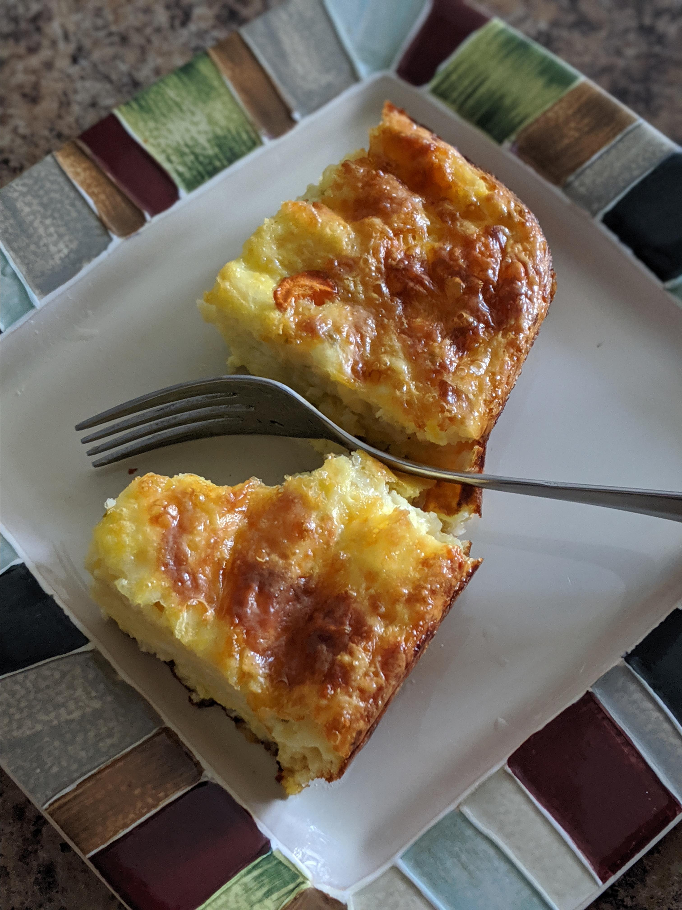

Cheesy Baked Eggs

Description
Lasagna is the name of one of the oldest and best-known pasta shapes.
It is usually rectangular or ribbon shaped, thicker than tagliatelle,
made from a dough based on flour and eggs, with numerous local varianThis Baked Cheesy Egg Casserole is perfect for a crowd or a breakfast celebration.
Ingredient
- 1 tablespoon butter, melted
- 12 eggs, beaten
- 1 pound shredded pepperjack cheese
- 1(16 ounce) container cottage cheese
- ½ cup all-purpose flour
- 1 teaspoon salt
Steps
- Preheat oven to 350 degrees F (175 degrees C). Prepare a 9x13 inch baking dish with the melted butter.
- Whisk together the eggs, pepperjack cheese, cottage cheese, flour, and salt in a large bowl. Pour the mixture into the prepared baking dish.
- Bake in the preheated oven until eggs are completely set, about 1 hour.